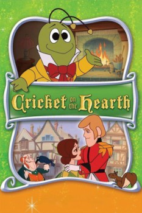

Country:United States, 49 minutes
Spoken languages:English
Genres:Animation, Family
Director(s):Jules Bass, Arthur Rankin Jr.
Writer(s):Arthur Rankin Jr., Romeo Muller, Charles Dickens
Video Codec:Unknown
Number: 82

Certification:
Storyline:
A delightful, animated musical version of Charles Dickens' classic tale. A Cricket on the Hearth, tells the story of a poor toymaker and his daughter whom a helpful Cricket named Crocket befriends on Christmas morning. When tragedy strikes the family, it's Crocket who comes to the rescue and restores peace and happiness.
Cast:
Danny Thomas (voice of Caleb), Marlo Thomas (voice of Bertha), Roddy McDowall (voice of Cricket Crocket), Hans Conried (voice of Tackleton), Paul Frees (voice of Messenger / Uriah / Captain / Toy Elephant)
Medium: Media file,
Location: D:\$RECYCLE.BIN\$RP4ESGP\Cricket on the Hearth.mp4
Loaned: No
Aspect ratio: Unknown